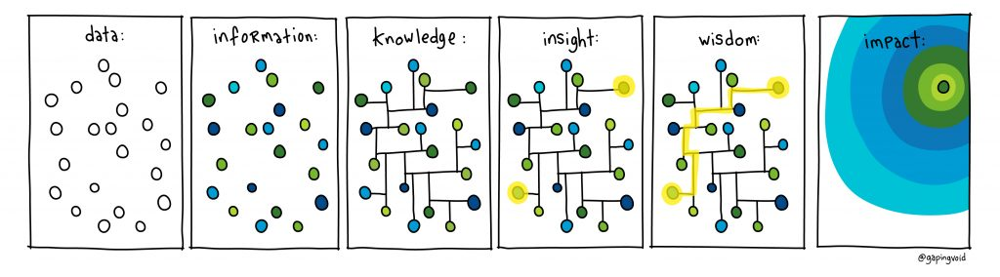

overview of info
description::
· human-info is the-bio-info of humans.
name::
* McsEngl.McsLag000003.last.html//dirLag//dirMcs!⇒info,
* McsEngl.dirMcs/dirLag/McsLag000003.last.html!⇒info,
* McsEngl.INFO,
* McsEngl.human-info!⇒info,
* McsEngl.human-information!⇒info,
* McsEngl.human-infoBrainBio!⇒info,
* McsEngl.info,
* McsEngl.info'(McsLag000003)!⇒info,
* McsEngl.info'(human-information)!⇒info,
* McsEngl.infoHmn!⇒info,
* McsEngl.information.human!⇒info,
* McsEngl.model.info.human!⇒info,
* McsEngl.modelInfoHuman!⇒info,
====== langoChinese:
* McsZhon.xìnxī-信息!=info,
* McsZhon.信息-xìnxī!=info,
====== langoGreek:
* McsElln.πληροφορία-ανθρώπινη!=info,
referent of info
description::
· info'referent is the-entity the-info models.
name::
* McsEngl.info'att001-referent,
* McsEngl.info'referent,
* McsEngl.referent-of-info,
relation-to-referent of info
description::
· the-relation between the-referent and the-info.
· do-not-confuse this relation and an-evaluation of this relation.
_stxZhon: {有}[(关于)[猫]](的)[电影]。yǒu guānyú māo de diànyǐng. != There are movies about cats.
name::
* McsEngl.about!~conjEngl!=rlnReferent,
* McsEngl.info'relation-to-referent!⇒rlnReferent,
* McsEngl.referent'relation-to-info!⇒rlnReferent,
* McsEngl.rlnReferent,
====== langoChinese:
* McsZhon.guānyú-关于!~conjZhon:rlnReferent,
* McsZhon.关于-guānyú!~conjZhon:rlnReferent,
generic-tree-of-rlnReferent::
* mapping-relation,
specific-tree-of-rlnReferent::
* true-rlnReferent,
* true-strong-rlnReferent,
* true-weak-rlnReferent,
* true-false-rlnReferent,
* false-weak-rlnReferent,
* false-strong-rlnReferent,
* false-rlnReferent,
rlnReferent.true
description::
· absolutely correct mapping with the-referent.
name::
* McsEngl.rlnReferent.true,
* McsEngl.true-rlnReferent,
rlnReferent.true-strong
description::
· strong correct mapping with the-referent.
name::
* McsEngl.rlnReferent.true-strong,
* McsEngl.true-strong-rlnReferent,
rlnReferent.true-weak
description::
· weak correct mapping with the-referent.
name::
* McsEngl.rlnReferent.true-weak,
* McsEngl.true-weak-rlnReferent,
rlnReferent.true-false
description::
· correct and correctNo mapping with the-referent.
name::
* McsEngl.rlnReferent.true-false,
* McsEngl.true-false-rlnReferent,
rlnReferent.false-weak
description::
· weak correctNo mapping with the-referent.
name::
* McsEngl.rlnReferent.false-weak,
* McsEngl.false-weak-rlnReferent,
rlnReferent.false-strong
description::
· strong correctNo mapping with the-referent.
name::
* McsEngl.rlnReferent.false-strong,
* McsEngl.false-strong-rlnReferent,
rlnReferent.false
description::
· absolutely correctNo mapping with the-referent.
name::
* McsEngl.misinformation,
* McsEngl.rlnReferent.false,
* McsEngl.false-rlnReferent,
rlnReferent.lie
description::
· an intentional false-evaluation (deliberately deceptive).
name::
* McsEngl.disinformation,
* McsEngl.lie,
====== langoGreek:
* McsElln.απατηλός!~adjvElln:-ός-ή-ό!=lie,
* McsElln.ψέμα!=lie,
* McsElln.ψευδής!~adjvElln:-ής-ής-ές!=lie,
info-resource (link) of info
DOING of info
description::
· any doing on info.
name::
* McsEngl.info'doing,
specific-tree-of-info'doing::
* braining,
* referenting,
evoluting of info
name::
* McsEngl.info'evoluting,
{time.2020-01-19}::
=== McsHitp-creation:
· creation of current concept.
GENERIC-SPECIFIC-TREE of info
name::
* McsEngl.info'generic-specific-tree,
generic-tree-of-info::
* McsEngl.info'generic,
* bio-info,
* model,
* entity,
specific-tree-of-info::
* brain-info,
* brainNo-info,
info.brain
description::
· brain-info is info created by the-human-brain.
name::
* McsEngl.info.brain!⇒infoBrain,
* McsEngl.brain-info!⇒infoBrain,
* McsEngl.infoBrain,
* McsEngl.infoBrain'(human-infoBrain)!⇒infoBrain,
referent of infoBrain
description::
· infoBrain is a-model of its referent.
name::
* McsEngl.infoBrain'referent,
* McsEngl.infoBrain'att001-referent,
braining (link) of infoBrain
GENERIC-SPECIFIC-TREE of infoBrain
name::
* McsEngl.infoBrain'generic-specific-tree,
GENERIC-TREE of infoBrain
generic-of-infoBrain::
*
attribute-tree-of-infoBrain::
* ,
att-tree-inherited-from::
· :
* ,
att-tree-own-of-infoBrain::
* ,
SPECIFIC-TREE of infoBrain
specific-of-infoBrain::
* brainin-infoBrain,
* braininNo-infoBrain,
===
* sensation-infoBrain,
* preconcept-infoBrain,
* concept-infoBrain,
* unit-infoBrain,
* view-infoBrain,
* worldview-infoBrain,
* knowledge-infoBrain,
* method-infoBrain,
infoBrain.in
description::
· brainin-infoBrain is infoBrain inside the-brain.
· sensorialNo-brain-info is infoBrain humans can-NOT-sense (see or hear or touch).
name::
* McsEngl.infoBrain.in!⇒infoBrainIn,
* McsEngl.infoBrain.001-brainin!⇒infoBrainIn,
* McsEngl.brainin-infoBrain!⇒infoBrainIn,
* McsEngl.infoBrainIn,
* McsEngl.infoBrainSensorialNo!⇒infoBrainIn,
* McsEngl.sensorialNo-brain-info!⇒infoBrainIn,
* McsEngl.sensorialNo-infoBrain!⇒infoBrainIn,
specific-tree-of-infoBrainIn::
* mind-info,
* semaso-info,
===
* sensation,
* preconcept,
* mind-concept,
* semaso-concept,
* brainIn-concept,
* mind-view,
* mind-worldview,
* semaso-view,
infoBrainIn.sensation
description::
· the-output of sensing, is the-sensation.
name::
* McsEngl.argSensing.sensation!⇒sensation,
* McsEngl.infoBrainIn.sensation!⇒sensation,
* McsEngl.sensation,
* McsEngl.sensing'03_sensation!⇒sensation,
* McsEngl.sensing'att003-sensation!⇒sensation,
* McsEngl.sensing'sensation-att003!⇒sensation,
* McsEngl.sensory-information!⇒sensation,
====== langoGreek:
* McsElln.αίσθημα!=sensation,
stimulous (link) of sensation
sensing (link) of sensation
infoBrainIn.preconcept
description::
· many sensations make-up a-preconcept, a-concept without name.
name::
* McsEngl.infoBrainIn.preconcept,
* McsEngl.preconcept,
referent of preconcept
description::
· referent-of-preconcept is the-stimulus of its sensations.
name::
* McsEngl.preconcept'referent,
* McsEngl.referent-of-preconcept,
infoBrainIn.mind-concept
description::
· mind-concept is a-preconcept with a-mind-name.
definition.generic.recursive::
· mind-concept is a-preconcept with a-mind-name.
· a-construction of common attributes of mind-concepts[a], is a-mind-concept, I call generic-of-these[a].
· the-most generic of all mind-concepts is a-mind-concept, I call entity.
[hmnSngo.{2021-01-31}]
name::
* McsEngl.infoBrainIn.mind-concept!⇒cptMind,
* McsEngl.conceptBrainHmn!⇒cptMind,
* McsEngl.conceptBrain.human!⇒cptMind,
* McsEngl.conceptMind!⇒cptMind,
* McsEngl.cptMind, {2020-04-30},
* McsEngl.cptMindHmn!⇒cptMind,
* McsEngl.infoMind.001-concept!⇒cptMind,
* McsEngl.mindConcept!⇒cptMind,
* McsEngl.mind-concept!⇒cptMind,
* McsEngl.human-conceptBrain!⇒cptMind,
* McsEngl.human-mind-concept!⇒cptMind,
====== langoSinago:
* McsSngo.enioBrainoHo!=cptMind,
====== langoGreek:
* McsElln.ανθρώπινη-έννοια-εγκεφάλου!=cptMind,
* McsElln.έννοια-εγκεφάλου-ανθρώπου!=cptMind,
* McsElln.έννοια-νου!=cptMind,
* McsElln.νου-έννοια!=cptMind,
referent of cptMind
description::
· cptMind'referent is the-entity the-cptMind models, the-archetype of cptMind.
· cptMind is a-model of its referent.
name::
* McsEngl.cptMind'referent,
* McsEngl.referent-of-cptMind,
mind-name of cptMind
description::
· mind-name is a-picture, a-video, or a-sound a-brain associates with a-cptMind.
name::
* McsEngl.concept-name!⇒nameMind,
* McsEngl.cptMind'mind-name!⇒nameMind,
* McsEngl.cptMind'name!⇒nameMind,
* McsEngl.mind-name-of-cptMind!⇒nameMind,
* McsEngl.nameMind,
* McsEngl.name.mind!⇒nameMind,
* McsEngl.name.001-mind!⇒nameMind,
specific-tree-of-nameMind::
* conceptogram,
* mind-word-name,
info-resource of cptMind
description::
* https://en.wikipedia.org/wiki/Concept,
* https://en.wikipedia.org/wiki/Concept_learning,
* https://en.wikipedia.org/wiki/Learning_styles,
* https://en.wikipedia.org/wiki/Conceptual_change,
* https://en.wikipedia.org/wiki/Principles_of_learning,
* https://en.wikipedia.org/wiki/Learning_theory_(education),
* https://en.wikipedia.org/wiki/Formal_concept_analysis,
* https://en.wikipedia.org/wiki/Concept_search,
name::
* McsEngl.cptMind'Infrsc,
structure of cptMind
description::
* external-concepts,
** whole-concepts,
** environment-concepts,
* internal|part-concepts,
===
* generic-concepts,
* sibling-concepts,
* specific-concepts,
name::
* McsEngl.cptMind'structure,
DOING of cptMind
description::
* creating,
** discovering,
** inventing,
** learning,
* changing,
* destroying,
name::
* McsEngl.cptMind'doing,
cptMind.SPECIFIC
description::
* attribute-of-concept,
* mind-view,
* mind-worldview,
name::
* McsEngl.cptMind.specific,
cptMind.attribute
description::
· attribute-of-cptMind[a] is a-cptMind that is-related to it[a].
name::
* McsEngl.attribute-of-cptMind,
* McsEngl.characteristic-of-cptMind,
* McsEngl.cptMind'attribute,
* McsEngl.cptMind.attribute,
* McsEngl.feature-of-cptMind,
cptMind.mind-worldview (link)
infoBrainIn.semaso-concept (link)
infoBrainIn.concept
description::
· brainin-concept is a-mind-concept or a-semaso-concept.
name::
* McsEngl.infoBrainIn.concept,
* McsEngl.brainin-concept,
infoBrainIn.semaso-info (link)
infoBrainIn.mind-view
description::
· mind-view is a-system of mind-concepts.
· a-mind-view is a-mind-concept.
name::
* McsEngl.conceptual-model!⇒viewMind,
* McsEngl.conceptual-system!⇒viewMind,
* McsEngl.conceptual-view!⇒viewMind,
* McsEngl.cptMindView!⇒viewMind,
* McsEngl.infoBrainIn.mind-view!⇒viewMind,
* McsEngl.infoMind.view!⇒viewMind,
* McsEngl.infoMind.002-view!⇒viewMind,
* McsEngl.mindView!⇒viewMind,
* McsEngl.mind-concept-view!⇒viewMind,
* McsEngl.mind-view!⇒viewMind,
* McsEngl.model.003-mind-view!⇒viewMind,
* McsEngl.model.mind-view!⇒viewMind,
* McsEngl.viewMind,
====== langoGreek:
* McsElln.εννοιακό-μοντέλο!=viewMind,
info-resource of viewMind
description::
* https://en.wikipedia.org/wiki/Conceptual_system,
name::
* McsEngl.viewMind'Infrsc,
infoBrainIn.mind-worldview (link)
infoBrain.out
description::
· braininNo-infoBrain is infoBrain NOT inside the-brain.
· sensorial-brain-info is infoBrain humans can-sense (see or hear or touch).
name::
* McsEngl.infoBrain.out,
* McsEngl.infoBrain.002-braininNo,
* McsEngl.braininNo-infoBrain,
* McsEngl.infoBrainOut, {2020-05-07},
* McsEngl.infoBrain.braininNo,
* McsEngl.infoBrainSensorial,
* McsEngl.sensorial-brain-info,
* McsEngl.sensorial-infoBrain,
specific-tree-of-::
* logo-info,
* sensorial-mind-info,
* sensorial-semaso-info,
infoBrain.unit
description::
· infoBrain-unit is infoBrain NOT divisible in smaller parts.
name::
* McsEngl.infoBrain.unit,
* McsEngl.infoBrain.004-unit,
* McsEngl.unit-of-infoBrain,
infoBrain.concept
description::
· concept is any mind-concept, semaso-concept, sensorial-concept.
name::
* McsEngl.infoBrain.004-concept!⇒concept,
* McsEngl.infoBrain.concept-004!⇒concept,
* McsEngl.concept,
* McsEngl.concept'(human-concept)!⇒concept,
* McsEngl.cpt!⇒concept,
* McsEngl.model.001-concept!⇒concept,
* McsEngl.model.concept!⇒concept,
====== langoSinago:
* McsSngo.enio!=concept,
====== langoChinese:
* McsZhon.gàiniàn-概念!=concept,
* McsZhon.概念-gàiniàn!=concept,
====== langoGreek:
* McsElln.έννοια'(ανθρώπου-έννοια)!=concept,
infoBrain.view
description::
· infoBrain-view is a-system of infoBrain-units we communicate.
name::
* McsEngl.infoBrain.view,
* McsEngl.infoBrain.005-view,
* McsEngl.infoBrain-view,
* McsEngl.viewBrain,
* McsEngl.view-of-infoBrain,
specific-tree-of-::
* mind-view,
* semaso-view,
* logo-view,
infoBrain.worldview
description::
· worldview is the-(outermost)-system of infoBrain-units.
· a-worldview is infoBrain on EVERYTHING.
name::
* McsEngl.infoBrain.worldview!⇒worldview,
* McsEngl.infoBrain.006-worldview!⇒worldview,
* McsEngl.infoBrain-worldview!⇒worldview,
* McsEngl.worldview,
* McsEngl.worldview'(human-worldview)!⇒worldview,
* McsEngl.worldview-of-infoBrain!⇒worldview,
====== langoEsperanto:
* McsEspo.mondkoncepto!=worldview,
====== langoGreek:
* McsElln.κοσμοαντίληψη!=worldview,
* McsElln.κοσμοθεώρηση!=worldview,
01_human of worldview
description::
· one or more humans that endorse this worldview.
name::
* McsEngl.worldview'01_human,
* McsEngl.worldview'human,
* McsEngl.worldview'att001-human,
02_concept of worldview
description::
· any concept this worldview describes.
name::
* McsEngl.worldview'02_concept,
* McsEngl.worldview'concept,
* McsEngl.worldview'att003-concept,
name of concept
description::
· any name used in the-worldview.
name::
* McsEngl.worldview'concept'name,
* McsEngl.worldview'name,
03_view of worldview
description::
· any view this worldview contains.
· for example, in an-encyclopedia, its articles constitute views.
name::
* McsEngl.worldview'03_view,
* McsEngl.worldview'view,
* McsEngl.worldview'att004-view,
04_management-tool of worldview
description::
· any tool used to manage a-worldview.
name::
* McsEngl.worldview'04_management-tool,
* McsEngl.worldview'att002-tool-for-management,
* McsEngl.worldview'management-tool,
* McsEngl.worldview'tool-for-management,
* McsEngl.worldview-management-tool,
info-resource of worldview
description::
* https://www.wolframalpha.com/,
* https://www.cyc.com/,
* https://schema.org/,
* https://en.wikipedia.org/,
name::
* McsEngl.worldview'resouce,
structure of worldview
description::
· the-level of structure of a-worldview.
· an-encyclopedia is unstructured.
name::
* McsEngl.worldview'structure,
evoluting of worldview
description::
·
name::
* McsEngl.worldview'evoluting,
worldview.SPECIFIC
name::
* McsEngl.worldview.specific,
description::
* mind-worldview,
* sensorial-mind-worldview,
* Mcs-worldview,
* Synagonism-worldview,
* logo-worldview,
===
* primary-worldview,
* primaryNo-worldview,
===
* individual-worldview,
* social-worldview,
===
* sensorial-worldview,
* sensorialNo-worldview,
===
* machine-readable-worldview,
* machine-readable-no-worldview,
===
* complete-worldview,
* consistent-worldview,
* monosemantic-worldview,
worldview.individual-001 (link)
worldview.social-002
description::
· social-worldview is a-worldview shared by many individuals.
name::
* McsEngl.worldview.social!⇒worldviewSocial,
* McsEngl.worldview.002-social!⇒worldviewSocial,
* McsEngl.worldview.individualNo!⇒worldviewSocial,
* McsEngl.social-worldview!⇒worldviewSocial,
* McsEngl.worldviewSocial,
worldview.sensorial-003
description::
· senso-worldview is a-worldview sensible by a-human-sense, for example a-written-worldview.
name::
* McsEngl.worldview.sensorial!⇒worldviewSenso,
* McsEngl.worldview.003-sensorial!⇒worldviewSenso,
* McsEngl.senso-worldview!⇒worldviewSenso,
* McsEngl.sensorial-worldview!⇒worldviewSenso,
* McsEngl.worldviewSenso,
====== langoGreek:
* McsElln.αισθητή-κοσμοθεώρηση!=worldviewSenso,
specific-tree-of-worldviewSenso::
* worldviewLogo,
* worldviewSensoMind,
worldview.sensorialNo-004
description::
· non-sensorial-worldview is a-worldview NOT sensible by a-human-sense, for example a-brain-in-worldview.
name::
* McsEngl.worldview.sensorialNo!⇒worldviewSensoNo,
* McsEngl.worldview.004-sensorialNo!⇒worldviewSensoNo,
* McsEngl.non-sensorial-worldview!⇒worldviewSensoNo,
* McsEngl.worldviewSensoNo,
worldview.primary-005
description::
· mind-worldview is a-worldview comprised of mind-concepts.
· a-mind-worldview is a-mind-concept.
name::
* McsEngl.worldview.primary!⇒worldviewMind,
* McsEngl.worldview.005-primary!⇒worldviewMind,
* McsEngl.infoBrainIn.mind-worldview!⇒worldviewMind,
* McsEngl.infoMind.worldview!⇒worldviewMind,
* McsEngl.infoMind.002-worldview!⇒worldviewMind,
* McsEngl.mental-model!⇒worldviewMind,
* McsEngl.mind'worldview!⇒worldviewMind,
* McsEngl.mind-worldview!⇒worldviewMind,
* McsEngl.primary-worldview!⇒worldviewMind,
* McsEngl.worldviewMind,
* McsEngl.worldviewMind'(human-mind-worldview)!⇒worldviewMind,
* McsEngl.worldview.mind!⇒worldviewMind,
====== langoGreek:
* McsElln.κοσμοθεώρηση-προσώπου!=worldviewMind,
descriptionLong::
"Coherence therapy is a system of psychotherapy based in the theory that symptoms of mood, thought and behavior are produced coherently according to the person's current mental models of reality, most of which are implicit and unconscious."
[{2020-08-18} https://en.wikipedia.org/wiki/Coherence_therapy]
worldviewMind.unconscious
description::
"The unconscious mind (or the unconscious) consists of the processes in the mind which occur automatically and are not available to introspection and include thought processes, memories, interests and motivations.[1]
Even though these processes exist well under the surface of conscious awareness, they are theorized to exert an impact on behavior. The term was coined by the 18th-century German Romantic philosopher Friedrich Schelling and later introduced into English by the poet and essayist Samuel Taylor Coleridge.[2][3]
Empirical evidence suggests that unconscious phenomena include repressed feelings, automatic skills, subliminal perceptions, and automatic reactions,[1] and possibly also complexes, hidden phobias and desires.
The concept was popularized by the Austrian neurologist and psychoanalyst Sigmund Freud. In psychoanalytic theory, unconscious processes are understood to be directly represented in dreams, as well as in slips of the tongue and jokes.
Thus the unconscious mind can be seen as the source of dreams and automatic thoughts (those that appear without any apparent cause), the repository of forgotten memories (that may still be accessible to consciousness at some later time), and the locus of implicit knowledge (the things that we have learned so well that we do them without thinking).
It has been argued that consciousness is influenced by other parts of the mind. These include unconsciousness as a personal habit, being unaware and intuition. Phenomena related to semi-consciousness include awakening, implicit memory, subliminal messages, trances, hypnagogia and hypnosis. While sleep, sleepwalking, dreaming, delirium and comas may signal the presence of unconscious processes, these processes are seen as symptoms rather than the unconscious mind itself.
Some critics have doubted the existence of the unconscious.[4][5][6]"
[{2020-08-15} https://en.wikipedia.org/wiki/Unconscious_mind]
name::
* McsEngl.mind.unconscious,
* McsEngl.unconscious-mind,
* McsEngl.worldview.013-unconscious-mind,
* McsEngl.worldview.unconscious-mind,
worldview.secondary-006
description::
· secondary-worldview is any NON primary-worldview.
· it is-derived from a-primary one.
name::
* McsEngl.worldview.secondary!⇒worldviewSecondary,
* McsEngl.worldview.006-secondary!⇒worldviewSecondary,
* McsEngl.secondary-worldview!⇒worldviewSecondary,
* McsEngl.worldviewSecondary,
worldview.logo-007
description::
· logo-worldview is a-worldview comprised of logo-views.
· wikipedia is an-example of a-logo-worldview.
name::
* McsEngl.worldview.logo!⇒worldviewLogo,
* McsEngl.worldview.007-logo!⇒worldviewLogo,
* McsEngl.logo-worldview!⇒worldviewLogo,
* McsEngl.worldviewLogo,
worldview.machine-readable-008
description::
· machine-readable-worldview is a-wordlview a-machine understands.
name::
* McsEngl.worldview.machine-readable!⇒worldviewMachine-readable,
* McsEngl.worldview.008-machine-readable!⇒worldviewMachine-readable,
* McsEngl.machine-readable-worldview!⇒worldviewMachine-readable,
* McsEngl.worldviewMachine-readable,
worldview.machine-readable-no-009
description::
· non-machine-readable-worldview is a-wordlview a-machine does-not-understand.
name::
* McsEngl.worldview.machine-readable-no!⇒worldviewMachine-readable-no,
* McsEngl.worldview.009-machine-readable-no!⇒worldviewMachine-readable-no,
* McsEngl.machine-readable-no-worldview!⇒worldviewMachine-readable-no,
* McsEngl.non-machine-readable-worldview!⇒worldviewMachine-readable-no,
* McsEngl.worldviewMachine-readable-no,
worldview.complete-010
description::
· complete-worldview is a-worldview with holes, undescribed parts of the-world.
name::
* McsEngl.worldview.complete!⇒worldviewComplete,
* McsEngl.worldview.010-complete!⇒worldviewComplete,
* McsEngl.complete-worldview!⇒worldviewComplete,
* McsEngl.worldviewComplete,
worldview.consistent-011
description::
· consistent-worldview is a-worldview with no contradictions.
name::
* McsEngl.worldview.consistent!⇒worldviewConsistent,
* McsEngl.worldview.011-consistent!⇒worldviewConsistent,
* McsEngl.consistent-worldview!⇒worldviewConsistent,
* McsEngl.worldviewConsistent,
worldview.monosemantic-012
description::
· monosemantic-worldview is a-worldview with all its names (mind-names or logo-names) defined.
name::
* McsEngl.worldview.monosemantic!⇒worldviewMonosemantic,
* McsEngl.worldview.012-monosemantic!⇒worldviewMonosemantic,
* McsEngl.monosemantic-worldview!⇒worldviewMonosemantic,
* McsEngl.worldviewMonosemantic,
infoBrain.knowledge
description::
· knowledge is true and useful for the-society infoBrain.
===
"Knowledge isn't free. You have to pay attention."
[{2020-07-17} https://twitter.com/ProfFeynman/status/1284036583910338560]
===
"The ultimate test of your knowledge is your capacity to convey it to another."
[{2020-08-15} https://twitter.com/ProfFeynman/status/1294491491474108416]
name::
* McsEngl.infoBrain.knowledge!⇒knowledge,
* McsEngl.infoBrain.007-knowledge!⇒knowledge,
* McsEngl.infoKnowledge!⇒knowledge,
* McsEngl.knowledge,
====== langoChinese:
* McsZhon.zhīshi-知识-(知識)!=knowledge,
* McsZhon.知识-(知識)-zhīshi!=knowledge,
====== langoGreek:
* McsElln.γνώση!=knowledge,
info-resource of knowledge
other-view of knowledge
description::

[https://www.gapingvoid.com/semiotic-management-systems/]
name::
* McsEngl.knowledge'other-view,
knowledge.scientific
description::
"Scientific knowledge is a body of statements of varying degrees of certainty -- some most unsure, some nearly sure, none absolutely certain."
-- Richard Feynman
[{2020-08-17} https://twitter.com/PhysInHistory/status/1295045381135335424]
===
"The scientific method is an empirical method of acquiring knowledge that has characterized the development of science since at least the 17th century. It involves careful observation, applying rigorous skepticism about what is observed, given that cognitive assumptions can distort how one interprets the observation. It involves formulating hypotheses, via induction, based on such observations; experimental and measurement-based testing of deductions drawn from the hypotheses; and refinement (or elimination) of the hypotheses based on the experimental findings. These are principles of the scientific method, as distinguished from a definitive series of steps applicable to all scientific enterprises.[1][2][3]"
[{2020-07-31} https://en.wikipedia.org/wiki/Scientific_method]
name::
* McsEngl.knowledge.scientific,
* McsEngl.scientific-knowledge,
infoBrain.knowledgeNo-009
description::
· knowledgeNo is info not-true or not-useful for society.
name::
* McsEngl.infoBrain.009-knowledgeNo,
* McsEngl.infoBrain.knowledgeNo,
* McsEngl.infoKnowledgeNo,
* McsEngl.knowledgeNo,
infoBrain.data-010
description::
· infoData is infoBrain with simple structure or info to be-processed.
name::
* McsEngl.DATA!⇒infoData,
* McsEngl.data!⇒infoData,
* McsEngl.infoBrain.010-data!⇒infoData,
* McsEngl.infoBrain.data!⇒infoData,
* McsEngl.infoData,
====== langoGreek:
* McsElln.δεδομένα!=infoData,
infoData.authoritative
description::
"Authoritative data
Data from officially regarded sources. A subset of spatial data may be described as ‘authoritative data’, where it has legal value because it is defined by a competent authority."
[{2021-02-03} https://joinup.ec.europa.eu/collection/elise-european-location-interoperability-solutions-e-government/glossary]
name::
* McsEngl.authoritative-data,
* McsEngl.infoData.authoritative,
infoData.big
description::
"Big data
High volume, high velocity (speed at which data is generated) and high variety information assets that demand cost-effective, innovative forms of information processing for enhanced insight and decision making."
[{2021-02-03} https://joinup.ec.europa.eu/collection/elise-european-location-interoperability-solutions-e-government/glossary]
name::
* McsEngl.big-data,
* McsEngl.infoData.big,
infoBrain.dataNo-011
description::
· infoDataNo is infoBrain with complex structure or info created after processing infoData.
name::
* McsEngl.dataNo!⇒infoDataNo,
* McsEngl.infoBrain.011-dataNo!⇒infoDataNo,
* McsEngl.infoBrain.dataNo!⇒infoDataNo,
* McsEngl.infoDataNo,
infoBrain.method
description::
· method is infoBrain on how to do a-doing.
name::
* McsEngl.infoBrain.method,
* McsEngl.infoBrain.008-method,
* McsEngl.method,
====== langoGreek:
* McsElln.μέθοδος!~η!=method,
specific-tree-of-method::
* mapping-method,
info.brainNo
name::
* McsEngl.info.brainNo,
* McsEngl.brainNo-info,
description::
· brainNo-info is info NOT created by the-brain.
· Dna is an-example of brainNo-info.
info.sensorial
description::
· sensorial-info is info perceived by human-senses.
name::
* McsEngl.info.sensorial!⇒infoSenso,
* McsEngl.sensorial-info!⇒infoSenso,
* McsEngl.infoSenso,
infoSenso.SPECIFIC
description::
* document,
* sensorial-concept,
name::
* McsEngl.infoSenso.specific,
infoSenso.document-001
description::
· document is organized infoSenso.
name::
* McsEngl.document!⇒InfDoc,
* McsEngl.InfDoc,
* McsEngl.infoSenso.document!⇒InfDoc,
====== langoGreek:
* McsElln.έγγραφο!=InfDoc,
info.news
description::
"newly received or noteworthy information, especially about recent or important events."
[{2021-10-16 retrieved} Google-dict]
name::
* McsEngl.info.news,
* McsEngl.news,
====== langoChinese:
* McsZhon.xīnwén-新闻-(新聞)!=news,
* McsZhon.新闻-(新聞)-xīnwén!=news,